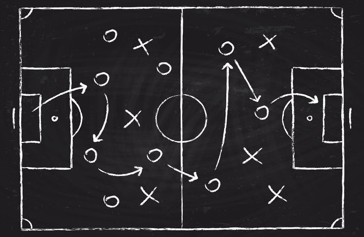

Football Tactics and Player Importance
Football Tactics
Football tactics refer to the various strategies and formations used by teams to gain an advantage over their opponents during a match. These tactics involve the positioning and movement of players on the field.

Player Importance
Each player in a football team plays a crucial role in the overall performance of the team. Their individual skills, teamwork, and understanding of the tactics contribute to the success of the team.

Explore More
Learn about different football formations, strategies, and the key attributes of players that make them effective on the field.